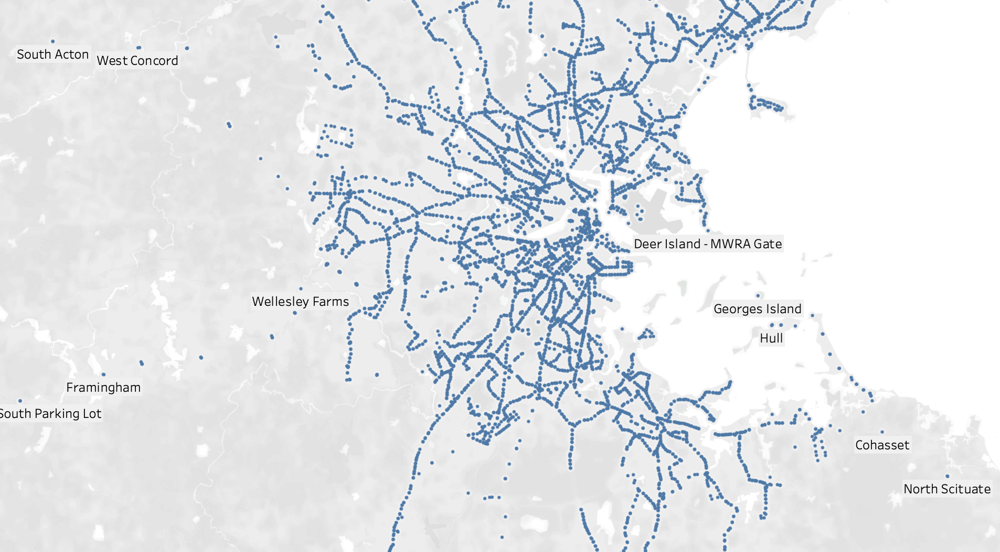
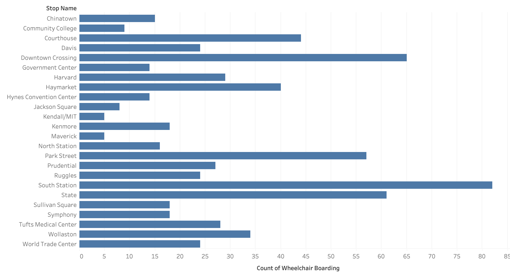
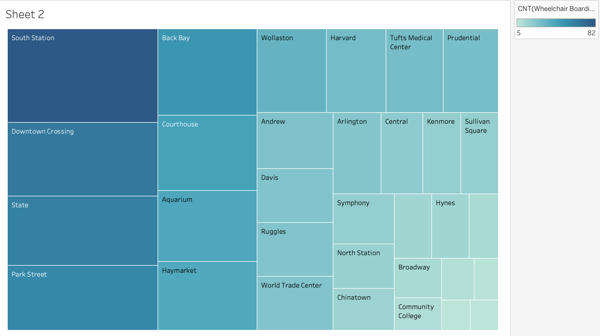
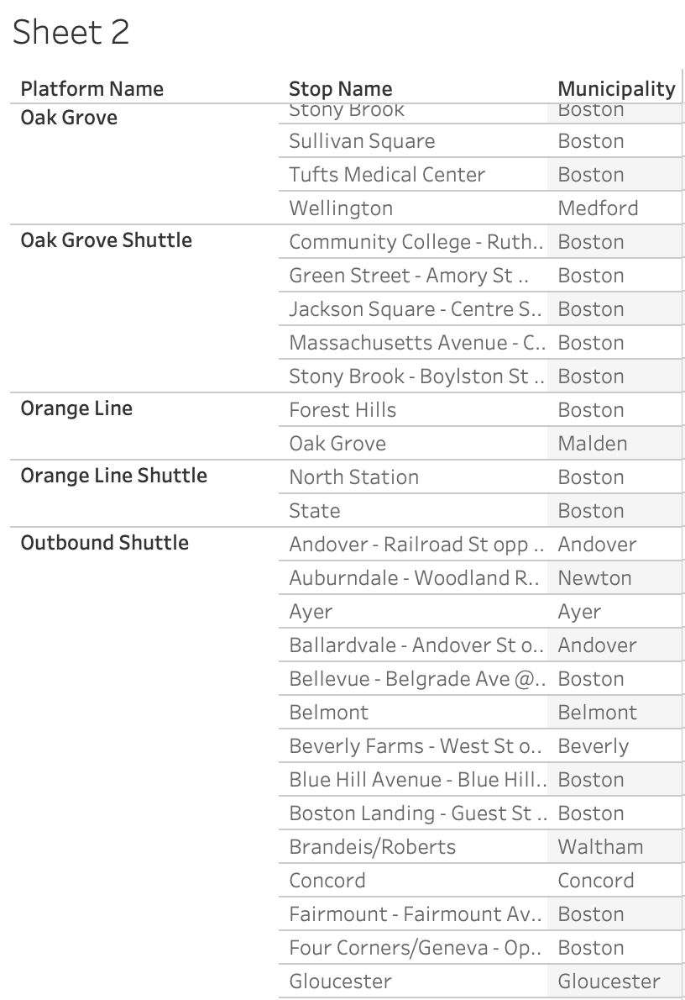
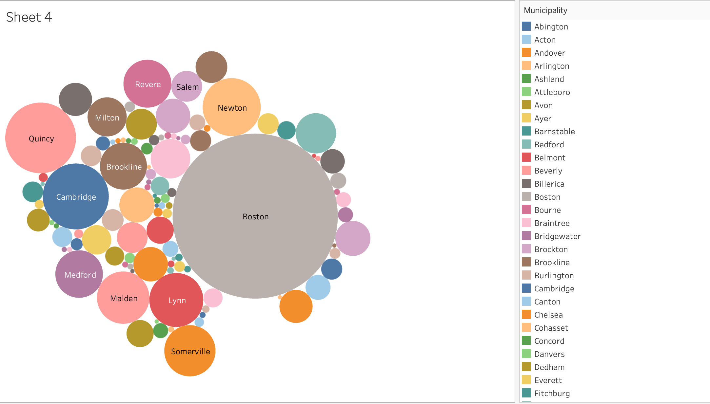
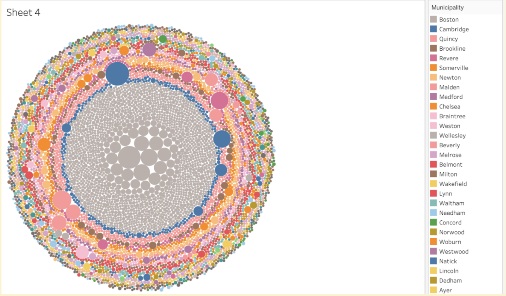
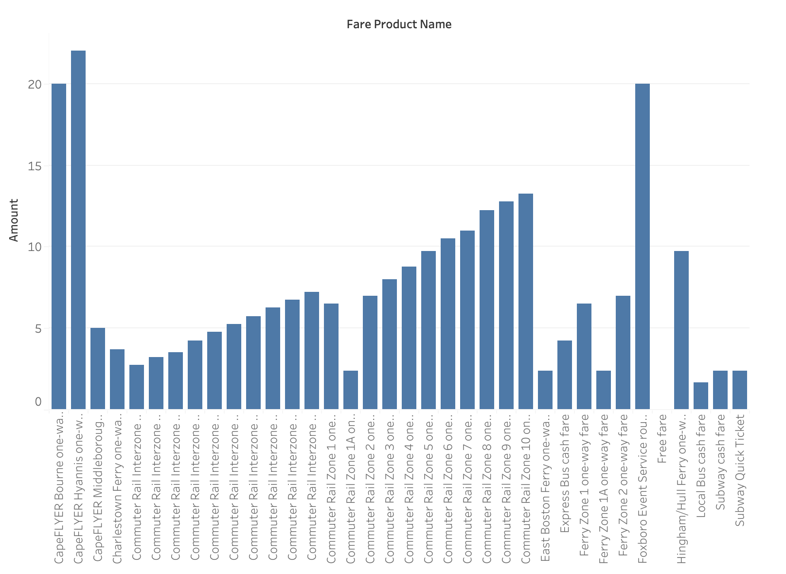
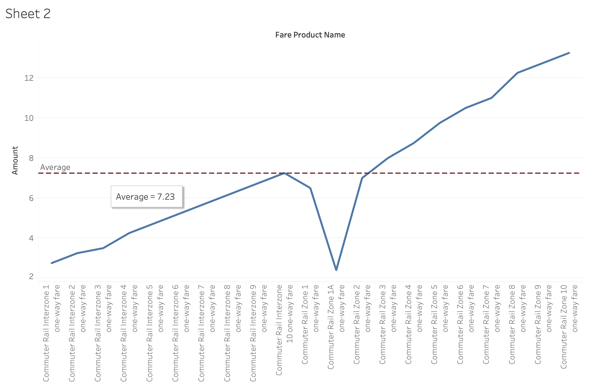
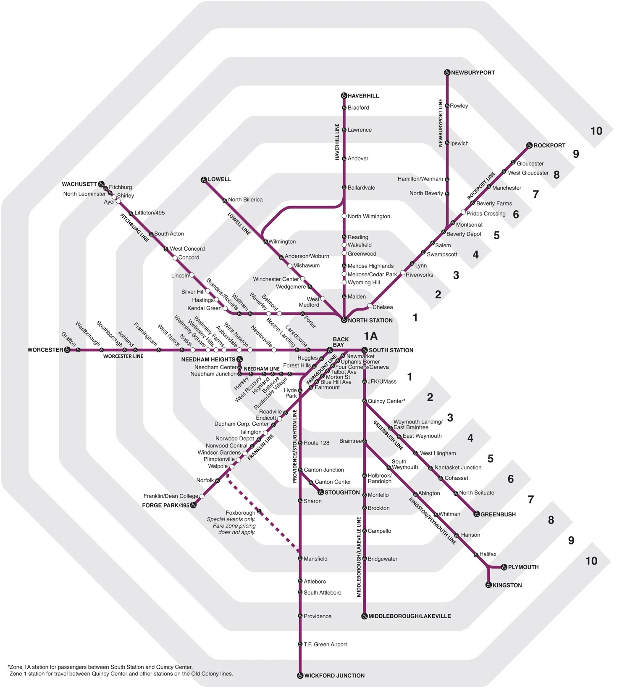
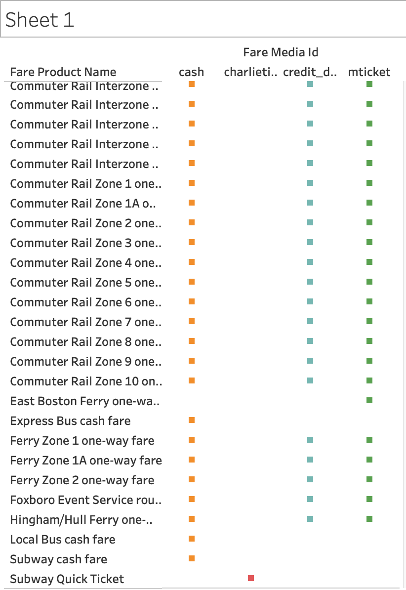

In this assignment, I conduct a general analysis of MBTA transit as it relates to transit-oriented development in Massachussets, with a specific focus on accessibility.
I specifically utilize two files within the MBTA General Transit Feed Specification (GTFS). The GTFS is the most commonly used format for specifying public transit schedules, and contains multiple files within one transit systems specifications. I used a dataset from February 9, 2025 and looked specific at two files. stops.txt contained information about the location, name, and accessibility of physical MBTA transit stations/stop and other buildings, and fare_products.txt contains information about the pricing of MBTA transit routes grouped into large categories.
As the first step of this data analysis, we take a general look at recent MBTA GTFS data. By using Stop Latitude and Longitude as dimensions, we can map the individual MBTAs stops onto the geography of Massachusetts. Looking at the map, we can see that the pattern of MBTA stops reveals the transit routes, how far out they run too, and how they are especially complex and concentrated towards the urban areas of Boston.
Fig. 1 Geomapping of Individual MBTA Stops by Longitude and Latitude
Tableau indicated that there were 32 data points with null lat and long values. It was difficult to pinpoint those on the map with the naked eye, so to analyze the data quality we created a bar chart with two arbitrary measurements, (the number of wheel-chair boardings, and stop name), and filtered it to only show the values with null lat and long. The result were stops whose number of wheel-chair boardings ranged from 5 - 80.
Fig. 2 Accessibility of Stops with Null Longitude and Latitude Values
But, to get a better understanding of whether these numbers of wheelchair boardings is uncommon or not, we mapped the number of wheel-chair boardings to stop names while filtering for non-null values. Because the data set was so large, thus we chose a treemap for more concise visualization compared to a barchart.
Fig. 3 Tree Map of Accessibility of MBTA Stops Non-Null Longitude and Latitude Values
After taking a closer look at the non-filtered data, it became clear that beyond the 32 null values, the data also contained duplicate points (where the lat/long was almost identical, but the stop name was either very generic like “Harvard” in the image above or specified things like “at XX street” or “opposite XX road”). Sometimes the data points had those kinds of stop names, but the lat/long was significantly distinct.
Exploring further, one dimension of note that we found was Municipality. After aligning Stop name against “Muncipality”, and filtering to exclude any null values, we learned that every data point has a corresponding “Municipality” (town/city). With this measure, we can now analyze the accessibility of transit stations by municipality.
Fig 5. Table of MBTA stop names Alongside Corresponding Municipalities
Now, to dig deeper into our questions, we investigate how accessibility varies by towns/cities using the municipality measure. We learned from the tree-map visualizations that a large portion of stops have at minimum 1 wheelchair boarding area. Creating bubble maps where the size of each bubble corresponded to the sum of wheelchair boardings allowed us to see that towns/cities with known larger populations like Boston and Cambridge , have more wheelchair boardings (at 3,003 and 479 respectively).
Fig 6. Bubble Chart of MBTA Accessibility by Municipality
It begs the question: what informs this? Is it because there are more stops in those larger cities, or does each individual stop have more wheelchair boardings themselves? By including each individual stop as a detail in the visualization, we can see that it is a combination of both factors and varies per city. Boston has many more individual stops, understandable due to the sheer size of its population, in addition a larger number of those stops have more wheelchair boardings in general (as indicated by the size of the bubble). Cambridge has fewer stops but multiple stops with a large number of wheelchair boardings.
Fig 7. Accessibility per Stop within Municipality
Note that it is may take a while to interpret the data on sight based on Figure 7, because we could not find a way for these colors to be grouped outside of each other in their own bubbles as opposed to within one large bubble. As such, it is a bit overcrowded.
Now, we look at another set of data from the GTFS (fare_products.txt) to analyze our next two questions. This data set is much smaller than the other, as MBTA fares are grouped into large categories, organized by geographic zones of different types of rides. For example: the Commuter Rail has multiple zones and interzones all with different pricing. The data set also includes information about CapeFLYER, a train going from Boston to Cape Cod only on specific weekends, and other types of transport like Buses and Ferrys. It also contains information about different payment methods (i.e credit vs. charlie card). The only null point in the data set is the payment method associated with the “Free Fare.” This is understandable as no payment method would be necessary if there is no fare, and does not reflect poor data quality.
Graphing fares against the different types of rides/ “fare products” we see that there is a large variety in the prices of transit. The highest fare is at $22.00 for the CapeFLYER from South Station to Hyannis, and the cheapest (beside the free fare) is the local bus cash fare at $1.70.
Looking more specifically at the commuter rail, we can compare the fares to a map of the zones to better understand why the fare incrementally increases.
The average fare for the commuter rail (across all zones in the data set is $7.23 for a one way trip). We also see that the fare for “Rail Zones” tends to be higher than “Rail Interzones.” According to the MBTA, Zone fares correspond to travel from any zone to zone 1A (stations in the center of the city). Whereas, Interzones correspond to travel between any zones that aren’t zone 1A.
Fig 9. Commuter Rail Fare Prices
Looking at a corresponding MBTA map of the commuter rail zones, we can see that as we increase in zone number, we also increase in distance from the center of the city, which is considered the starting point of fares. Thus, it is clear that fare corresponds with distance traveled. It also accounts for the sudden drop in fare for Rail Zone 1A, as that would be akin to only traveling within zone 1A (thus the minimum price).
This elicits another question, can all payment methods be utilized at each location? A higher variety of accepted payment methods would allow more people access to public transport, so it is worth questioning. The four types of payment methods in the dataset are cash, charlie card, credit/debt, and mticket. We see that for the majority of locations, 3 of the 4 methods (mticket, credit/debt, and cash) are allowed. Charlie cards are only utilized for subway passage. There are also some select locations where only 1 method is allowed. For example: the East Boston Ferry The four types of payment methods in the dataset are cash, charlie card, credit/debt, and mticket. We see that for the majority of locations, 3 of the 4 methods (mticket, credit/debt, and cash) are allowed. Charlie cards are only utilized for subway passage. There are also some select locations where only 1 method is allowed. For example: the East Boston Ferry only takes mticket. Thus, we see that while the majority of MBTA locations are quite accessible due to variation in accepted payment methods, there are some that still may be inaccessible.
Fig 10. Accepted Payment Methods by Transit Location
We analyzed the physical accessibility of transit stations in the MBTA system (through wheelchair boarding areas), in addition to the monetary accessibility (through payment method and fare price). Through this analysis, we have learned that the physical accessibility of MBTA stations ranges widely depending on location, with all stations in the data set having at least one wheelchair accessible area. More populous towns tend to have more wheelchair accessible areas due to a larger number of stops and more accessible areas within those stops. We also see that fare prices vary from ~$2 to $20 and this variation is impacted by distance one travels. Most payment methods accept the transit locations in the dataset, though there are some exceptions.